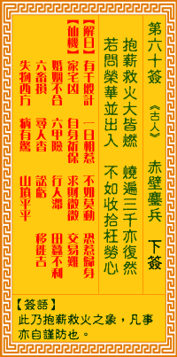

观音灵签第六十签 【赤壁鏖兵】 |
 | |||
抱薪救火火增烟 烧却三千及大千 若问营谋并出入 不如收拾莫忧燃 |
||||
| 【吉凶】 | 下下签 | 【宫位】 | 寅宫 | |
| 【签语】 | 此卦抱薪救火之象，凡事亦自谨防也。 | |||
| 【解曰】 | 千般用计 不如莫动 一旦相惹 恐祸归身 | |||
| 【仙机】 | 此签家宅凶，自身祈保，求财微微，交易难，婚姻不合，六甲险，行人滞，田蚕不利，六畜损，寻人杳，讼亏，移徙吉，失物西方，病有 惊，山坟平平。 | |||
| 【详解】 | 宛如抱着木柴去灭火，火却越烧越旺，最后都被大火吞噬殆尽一无所有;此刻若要问出入营谋等事，还是安心守旧才能无忧。 总有千般，一旦皆休，安心守旧，维得无忧。此签抱薪救火之象，凡事守旧则吉。 本签示之于弟子曰。抱薪救火。当然火会增烟。霉头加以霉繇此可知。君尔凡是着手兴事。必须守旧。千万不能逞一时之勇。见人之成。见异思迁。轻举妄动。恐怕有大害。不仅不能成事。反而将事弄砸。得不偿失。易言之。总有千般一旦皆休安心守旧维得无忧。 此签有”心浮气躁”之意。奉劝当事人，尽量平心静气。须知过度的情绪反应，会让人失去对事物应有的基本分析能力。也因为无法保持冷静，在此时做出的判断往往失策而且导致不可收拾的局面。如遇有大喜大悲大怒之事，不要急着做出反应，先试着把自己冷静下来，让情绪归于平稳。心平气和之后才能专心思考，谨慎反复过滤求证之后，才能做出正确理智的判断。凡事勿冲动躁进，小心行事，免得乐极生悲，后悔莫及。 | |||
| 【典故】 | 曹操大军驻扎在赤壁江岸旁，兵士多为北方人，不谙水性。周瑜要破曹操大军，苦无良策，幸得孔明祭东风，黄盖引火在三江口火攻曹操 连环铁船，二方军队在赤壁下激烈水战，一片火海，曹军死伤不计其数。曹操带了一只败兵往陆地逃亡，走向鸟林。三国故事。 | |||